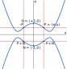

Double-Odd Curves as Jacobi Quartics
After the initial publication of double-odd curve formulas, it was found that they can be turned, with a proper change of variable, into another type of curve equation known as the Jacobi quartic. In this alternate representation, we can have somewhat more efficient formulas for point doublings, and we can also support a different encoding format for which point decoding from bytes is more efficient than with the original double-odd curves.
Change of Variable
For a double-odd elliptic curve of equation \(y^2 = x(x^2 + ax + b)\), we can consider the following change of variables: \[\begin{eqnarray*} u &=& \frac{x}{y} \\ e &=& u^2 \left(x - \frac{b}{x}\right) \end{eqnarray*}\]
The \(u\) coordinate is the inverse of the \(w\) coordinate that we encountered previously; \(w = y/x\) is the slope of the line from the point \(N\) of order two, to the point \(P = (x,u)\). The \(u\) coordinate has the advantage of being naturally extended to a finite value (\(0\)) for \(N\) itself: the tangent to the curve on \(N\) is vertical, so its slope is infinite, but the inverse of the slope should then be zero. Moreover, there is no other point of order 2, so there is no point distinct from \(N\) where \(w = 0\), which means that \(u\) is well-defined.
The \(e\) coordinate is also well-defined, since a simple calculation shows that it is equal to \((x^2 - b)/(x^2 + ax + b)\), and neither the denominator nor the denominator is ever zero for a double-odd curve. For \(N\), the \(e\) coordinate is \(-1\). We can even extend the \((e,u)\) coordinates to the point-at-infinity \(\mathbb{O}\), which does not have defined \((x,y)\) coordinates, by setting \(e = 1\) and \(u = 0\) for that point; as will be seen later on, these are the values that "work well" with the formulas.
The change of variable morphs the curve equation into: \[\begin{eqnarray*} e^2 = (a^2-4b)u^4 - 2a u^2 + 1 \end{eqnarray*}\] which is an equation type known as the Jacobi quartic, and studied by C. G. J. Jacobi back in the 19th century. This yields a curve shape (when applied to real numbers) similar to the one shown here. The picture exhibits some salient features of that curve shape:
-
The point-at-infinity is no longer "at infinity"; it has defined coordinates.
-
For a given point \(P = (e,u)\), we easily obtain \(-P = (e,-u)\), \(P+N = (-e,-u)\), and \(-P+N = (-e,u)\) (this explains why we choose \((1,0)\) as the coordinates of the point-at-infinity, given that \(N = (-1,0)\)).
Many formulas for computing point additions on Jacobi quartics have been discovered over the years; for a good summary, see the paper Jacobi Quartic Curves Revisited by Hisil, Wong, Carter and Dawson. Using their extended coordinates (or, equivalently, the representation proposed earlier by Duquesne, which is the same system under slightly different notations), we get general point addition in cost 8M+3S, which is roughly equivalent to the 10M cost we get with the original double-odd curves in \((x,u)\) coordinates. We get some improvements on doublings:
-
A single point doubling is computed in cost 2M+5S, that can be lowered to 1M+6S on many double-odd curves, in particular the ones we specify as standard curves (jq255e and jq255s).
-
We can still optimize sequences of doublings, with a per-doubling cost of 1M+5S (jq255e) or 2M+4S (jq255s); we could already do that with the original double-odd curves, but the overhead for entering the sequence is lower (only 1S instead of 3M).
We can thus obtain some performance improvements on computations.
Enhanced Point Compression
Using \((e,u)\) coordinates yields another performance gain, related to the encoding (aka compression) of points into bytes.
Double-odd curves have order \(2r\) for some odd integer \(r\); we of course usually arrange for \(r\) to be prime. We want to work with a prime order group, such as \(E[r]\) (the points of \(r\)-torsion on the curve); what we are really using is a quotient group: the quotient of the curve by the subgroup \(\{\mathbb{O},N\}\). In other words, a group element is a pair of points \(\{P,P+N\}\), and the two points \(P\) and \(P+N\) both represent the same group element.
In the original double-odd curves, we always enforce the use of the representant which is not a point of \(r\)-torsion; we do so, as explained in the geometrical introduction, so that we avoid the tricky exceptional cases of the traditional addition law on short Weierstraß curves. When decoding points from their \(w\) coordinate, there are two possible matching points on the curve, but only one of them is a non-\(r\)-torsion point, and we can unambiguously recognize that point thanks to the fact that the \(x\) coordinate of an \(r\)-torsion point is a square in the field, while the \(x\) coordinate of a non-\(r\)-torsion point is a non-square.
This scheme works, but it entails computing a Legendre symbol on top of the square root which is already needed to get the two candidate points for a given \(w\). Jacobi quartics give us a better option which avoids the cost of that Legendre symbol. Indeed, the choice of the "right" representant was required because the \((x,u)\) formulas are complete on the group but may miscompute things if given points of \(r\)-torsion. A contrario, the formulas on double-odd Jacobi quartics are complete on the whole curve: we do not have to select any specific representant, both will work properly (the completeness of the formulas does not apply to all Jacobi quartics, but it applies to about half of them, including all double-odd Jacobi quartics). Thus, instead of using a Legendre symbol, we can employ a much cheaper "sign" convention (typically, the least significant bit of the representation of a field element as an integer) to unambiguously encode and decode a group element.
Unfortunately, this new encoding scheme implies an incompatible change in the encoding format; we thus define the new groups jq255e and jq255s, which are (algebraically) the same groups as do255e and do255s, but with a modified encoding format. In a nutshell:
-
To encode a point \(P = (e,u)\), first select either \(P\) or \(P+N = (-e,-u)\), depending on the "sign" of \(e\); i.e. we choose the representant of the group element whose \(e\) coordinate is non-negative. We then encode its \(u\) coordinate into bytes.
-
To decode a point from its \(u\) coordinate, we compute \(e^2\) from the curve equation (\(e^2 = (a^2-4b)u^4 - 2au^2 + 1\)), then extract its square root to get \(e\). There are two solutions; we simply choose the non-negative one.
This improved encoding format has some definite advantages. We can compare it with the compression and decompression procedures used in the original double-odd curve specifications, as well as what is done in twisted Edwards curves, and their cofactor-eliminated variants Decaf/Ristretto:
-
In double-odd Jacobi quartics, decompression only involves a square root computation; the Legendre symbol computation is eliminated. While the Legendre symbol can be significantly cheaper than a square root (down to 1/6th of the cost in small microcontrollers), not computing it at all is even cheaper. This makes decompression as efficient as in twisted Edwards curves and Decaf/Ristretto.
-
Our new decompression method naturally yields affine \((e,u)\) coordinates; there is no need to smuggle an extra inversion in the modular exponentation that is at the root of the square root computation. In that sense, it is even slightly simpler than in twisted Edwards curves and Decaf/Ristretto.
-
Encoding (compression) is immediate. In practice, starting from a point in extended coordinates, a normalization is required, which involves an inversion in the field. This is equivalent to twisted Edwards curves, but more efficient than Decaf/Ristretto compression, which requires a combined inversion/square root computation. On small microcontrollers, inversion can be quite faster than square roots (down to 1/5th of the cost); on large systems, batch inversion can be thoroughly optimized, while batch square root cannot.
Summary
The introduction of the \((e,u)\) coordinates can be summarized as follows:
-
We get an improved decoding mechanism, which is faster, and easier to implement.
-
We still have decently fast general point addition formulas.
-
Point doublings get faster, which improves performance.
-
Since the decoding formulas have changed, we formally get new prime-order groups, called jq255e and jq255s.
Since jq255e and jq255s are new groups, we take the opportunity to redefine the cryptographic schemes that operate on them (signatures, key exchange), to replace the SHAKE function with BLAKE2s, which is somewhat less versatile, but a good deal faster, especially on small 32-bit microcontrollers. More importantly, we also make signatures smaller (48 bytes instead of 64) and, as a side effect, faster as well, as explined in the Short Signatures section.